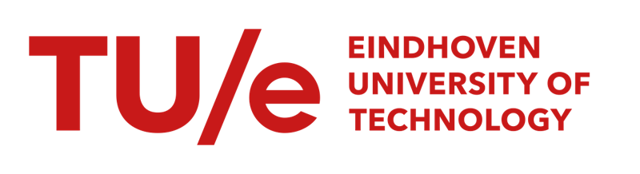
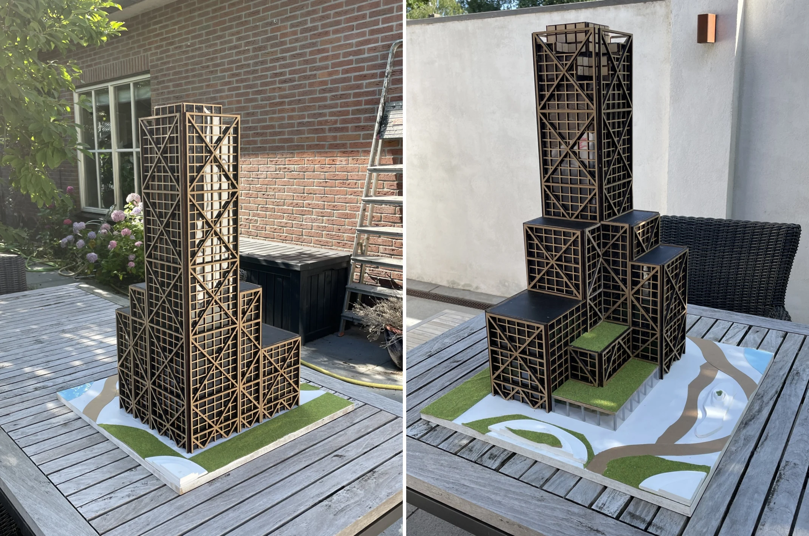
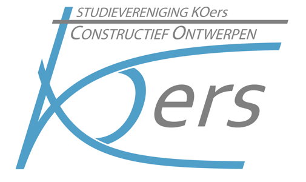

Een gebouw op een brug
Een licht gebouw op een bestaande brug over de Dommel op de TU/e-campus, met aandacht voor prefabricage, krachtsafdracht en montage.
Bekijk het project ↗
Het overzicht dat ik zelf miste,
wil ik helpen maken.
Ik ben Vigo de Groot, afstudeerder binnen SED. Ik wil mijn projectervaring en interesse in webdesign inzetten voor de volgende generatie studenten.

MSc Architecture, Building and PlanningStructural Engineering and DesignToen ik de vacature las, dacht ik meteen: dit had ik zelf graag gehad toen ik aan mijn studie begon.
Tijdens mijn bachelor en master vond ik het soms lastig om te zien hoe afzonderlijke vakken samenhangen. Vooral aan het begin van een ontwerpproject: welke kennis heb ik nu nodig, en hoe pas ik die toe?
Ik heb vrijwel alle SED-projectvakken gevolgd, waaronder de vier bachelorprojecten, BAU Studio 1 en 2, het SED-bachelor-eindproject en de masterprojecten Large Span en High Rise. Aan het einde van mijn studie wil ik die ervaring graag gebruiken om nieuwe studenten op weg te helpen.
Een duidelijke route van ontwerpopgave naar eerste constructieve keuzes.
Mechanica en materiaalvakken gekoppeld aan concrete ontwerpvragen.
Uitgewerkte voorbeelden die ook de afwegingen en tussenstappen laten zien.
Van een bestaand brugdek tot een stadiondak en hoogbouw. Een selectie uit mijn bachelor en master.
Een licht gebouw op een bestaande brug over de Dommel op de TU/e-campus, met aandacht voor prefabricage, krachtsafdracht en montage.
Bekijk het project ↗
Een beweegbaar dak voor het Philips Stadion: van een variantenstudie naar een constructief systeem, berekeningen en een uitvoeringsvolgorde.
Bekijk het project ↗
Een hoogbouwontwerp voor het VDMA-terrein in Eindhoven, waarin materiaalgebruik, stabiliteit en ruimtelijke kwaliteit samenkomen.
Bekijk het project ↗Het afgelopen halfjaar ben ik me uit interesse gaan verdiepen in webdesign en de mogelijkheden van LLM’s bij het maken van websites. Voor een promovendus heb ik inmiddels een website gemaakt.
Die interesse wil ik inzetten voor het handbook: een heldere structuur, begrijpelijke visuals en een digitale vorm waarmee studenten snel vinden wat ze nodig hebben.
Ik licht mijn motivatie en ideeën graag toe in een gesprek.
Neem contact op ↗v.m.d.groot1@student.tue.nl
Ik verwacht in januari 2027 af te studeren, met mogelijke uitloop naar februari. Ik wil dit werk graag combineren met de afronding van mijn master.
De genoemde 240 uur tot en met 31 december 2026 bespreek ik daarom graag: een kleinere wekelijkse inzet en eventueel een langere doorlooptijd zouden beter aansluiten.
Mijn voorstel: samen met de docenten en KOers bepalen welke onderwerpen prioriteit hebben, en vroege versies met studenten testen.
